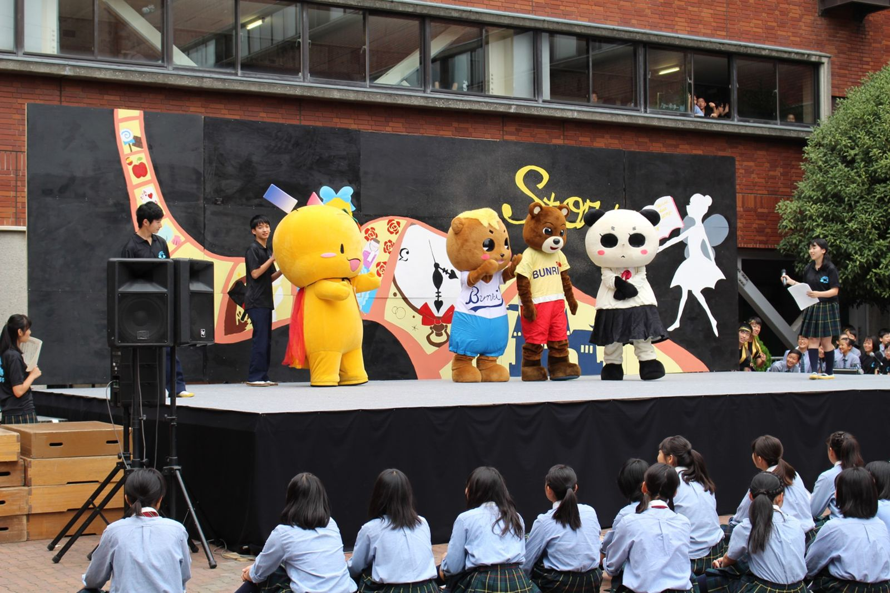

文理祭とは
生徒が主体となって企画・運営する、本校最大の学校行事。 各クラス・部活動による出し物、ステージ発表、模擬店などが2日間にわたって行われます。
01
クラス企画
お化け屋敷・脱出ゲーム・カジノなど、各クラスが趣向を凝らした企画を実施します。
02
ステージ発表
有志団体や部活動によるステージパフォーマンスを予定しています。
03
模擬店・部活動企画
飲食を含む模擬店や、部活動による企画展示も行われます。

出し物を探す
カテゴリーごとにご案内します。詳しい一覧ページは準備が整い次第公開します。
クラス企画
承認済み21件
お化け屋敷・脱出ゲーム・カジノなど、各クラスによる企画です。
ステージ発表
準備中
有志団体・部活動によるステージパフォーマンスです。準備が整い次第掲載します。
模擬店・部活動企画
準備中
飲食を含む模擬店や、部活動による企画展示です。準備が整い次第掲載します。
タイムスケジュール
時間は予定です。確定次第このページを更新します。
1日目（10月3日・土）
- 9:00開場
- 9:20オープニングセレモニー
- 10:00〜15:00クラス企画・模擬店・展示
- 15:30ステージ発表
- 16:301日目終了
2日目（10月4日・日）
- 9:00開場
- 10:00〜15:00クラス企画・模擬店・展示
- 15:00後夜祭・クロージング
- 16:002日目終了

今の混雑状況を見る
待ち時間サイトは現在準備中です。運用開始後、企画ごとの待ち時間を確認できます。
お知らせ
- 2026.07.29 文理祭2026 公式サイトを公開しました。